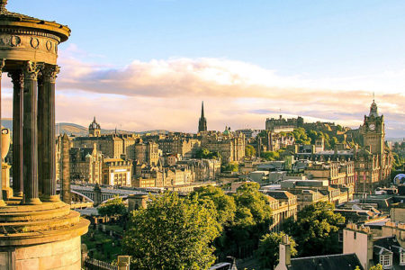

Florencia

Florencia, capital de la Toscana con unos 400.000 habitantes, es una ciudad de arte, donde las numerosas estatuas, plazas, edificios religiosos y civiles, palacios, lonjas y museos hacen de ella un destino único.
Famosa en el mundo entero por conservarse igual que en el siglo XVI, en Florencia se unen clasicismo y modernidad gracias a los proyectos de modernización que el ayuntamiento de Florencia ha puesto en marcha, como es el caso de la nueva estación del tren de alta velocidad, todavía en proyecto, diseñada por Norman Foster.
Algunos de loslugares más bonitos y más visitados de Florencia son: Piazza del Duommo, Piazza della Signoria y el Ponte Vecchio
 Inicio
Inicio
Amsterdam
 Bangkok
Bangkok
Edimburgo
 Islandia
Islandia